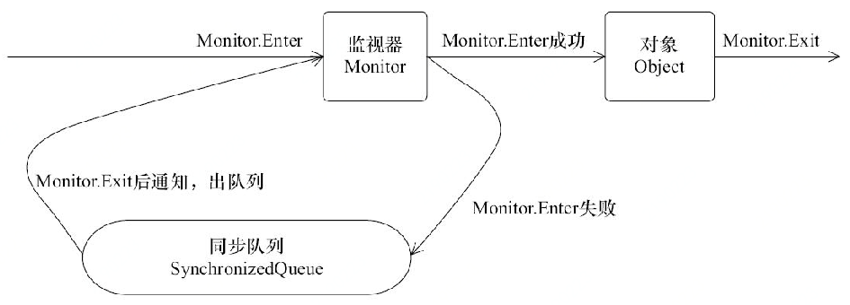

非访问修饰符#
static#
static修饰的变量称为静态变量，所有当前类的实例共享静态变量，局部变量不能被声明为静态变量。static修饰的方法称为静态方法，静态方法不能使用类的非静态变量。静态方法从参数列表得到数据。
final#
final修饰的变量赋值后不能被重新赋值，被修饰的实例变量必须显式指定初始值。final修饰符通常和static修饰符一起使用来创建类常量。父类中的final方法可以被子类继承，但是不能被子类重写，声明final方法的主要目的是防止该方法被重写。 被final修饰的类不能被继承，没有类能够继承final类的任何特性。
abstract#
abstract修饰的类称为抽象类，抽象类不能实例化。 一个类不能同时被abstract和final修饰。 如果一个类包含抽象方法那么该类一定要声明为抽象类，否则将出现编译错误。 抽象类可以包含抽象方法和非抽象方法。 抽象类可以不包含抽象方法。抽象方法的声明以分号结尾。
abstract修饰的方法称为抽象方法，抽象方法是一种没有任何实现的方法，该方法的的具体实现由子类提供。抽象方法不能被声明成final 和static。 任何继承抽象类的子类必须实现父类的所有抽象方法，除非该子类也是抽象类。
synchronized#
synchronized可以修饰方法或者以同步块的形式来进行使用，它主要确保多个线程在同一个时刻，只能有一个线程处于方法或者同步块中，它保证了线程对变量访问的可见性和排他性。
同步方法的实现是方法修饰符上的ACC_SYNCHRONIZED指令来完成的，而同步块的实现使用了monitorenter和monitorexit指令。无论采用哪种方式，其本质是对一个对象的监视器（monitor）进行获取，而这个获取过程是排他的，也就是同一时刻只能有一个线程获取到由synchronized所保护对象的监视器。 任意一个对象都拥有自己的监视器，当这个对象由同步块或者这个对象的同步方法调用时，执行方法的线程必须先获取到该对象的监视器才能进入同步块或者同步方法，而没有获取到监视器（执行该方法）的线程将会被阻塞在同步块和同步方法的入口处，进入BLOCKED状态。
transient#
序列化的对象包含被 transient 修饰的实例变量时，java虚拟机(JVM)跳过该特定的变量。该修饰符包含在定义变量的语句中，用来预处理类和变量的数据类型。
volatile#
关键字volatile可以用来修饰字段（成员变量），程序任何对该变量的访问均需要从共享内存中获取，而对它的改变必须同步刷新回共享内存，它能保证所有线程对变量访问的可见性。一个volatile对象引用可能是null。